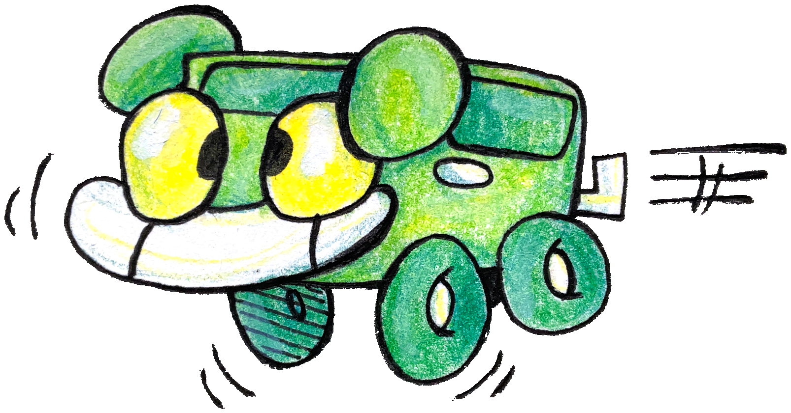

WHAT THE HECK IS THE AROOSTOOK PROJECT?
The Aroostook Project is a mental health mission created by me, Evie! I give small, handmade
drawings of Aroostook (the green car pictured above!) to people who aren't having a good day, are going through
something hard, or just look like they need a little cartoon car to look at.
The Aroostook Project also acts as a small fundraiser. Most of the proceeds go to charity, though a portion does support me and keeps the site running.

The purpose of the Aroostook Project is to show that there's always something you can do if someone's in distress, even if it's just a small gesture. Ask how they're doing, include them, or if you like, check out the links up top to draw your own Aroostook!